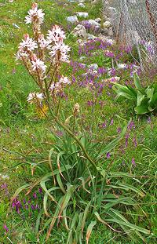

Magnolias


SAFARI
Users
Families:
- Amaryllidaceae - Onions, Garlic, Chives, etc.
- Asparagaceae - Asparagus, Agave, Cabbage Tree, Wombat Berry, etc.
- Iridaceae - Iris, Crocus
- Orchidaceae - Orchids
- Xanthorrhoeaceae - Daylilies, Aloe, etc.
Amaryllidaceae Family
Onions, etc.[Genus Allium]
The Onion genus (Allium), which includes Onions, Garlic,
Leeks, Chives, Shallots, Scallions, Ramps and others is critical to
almost every cuisine in the world, except a few Hindu and Buddhist
sects and the Jains all of whom forbid the entire genus. They use
asafoetida to try to close the flavor gap (asafoetida, like onions,
is high in sulphur). This very important genus of vegetables has its
own Onions page.
|
Asparagaceae Family
Agave & Sotol[Genus Agave | Genus Dasylirion]
Agave is an important food and beverage plant, native to arid regions
of Mexico and extending into the southwest of the United States and as
far south as central South America. Sotol, which is similarly used,
has a much more restricted range, through the U.S. / Mexico border
region. Both plants are also popular decoratives for dry landscaping.
These vegetables have their own
Agave & Sotol page.
Asparagus[Asparagus officinalis]
This plant is native to most of Europe, Western Asia and parts of
North Africa. It is depicted as an offering on and Egyptian frieze
dated to about 3000 BCE, and was a very favored vegetable during the
Roman Empire. This vegetable has its own
Asparagus page.
Bath Asparagus[Asperge des bois (French); Wild Asparagus, Prussian asparagus, Pyrenees star of Bethlehem, Spiked star of Bethlehem; Ornithogalum pyrenaicum]
This plant is native to southern Europe and Anatolia. In the west it
grows as far north as southern England. The name "Bath Asparagus" is
from it having been common in the woodlands surrounding the town of
Bath in England. It hasn't been sold in England since about 1939, but
is still harvested in the wild, possibly overharvested. It may be
in cultivation in France, and apparently some is cultivated in the
United States, as I have seen a photo of fresh stalks in a Boston
market. Young stems with unopened inflorescence are cooked pretty much
the same as regular asparagus.
Photo by Prosopee distributed under license Creative
Commons
Attribution-ShareAlike 3.0 Unported.
Cabbage Tree[Genus Cordyline]
These plants are native to Southeast Asia, Polynesia, Melanesia,
New Zealand, Australia and naturalized in Hawaii. They have been
valued by indigenous peoples for the high sugar content of their
rhizomes and stems. We have given the three most important species
their own Cabbage Trees
page - not because they are used much differently, but because
these closely related species are so very different one from
another.
Camas[Quamash, Indian Hyacinth, Camash, Wild Hyacinth; Genus Camassia - Species C. quamash, C. howellii, C. scilloides and possibly others] Camas is particularly dense in the northwest of North America - British Columbia, Canada, down into central California in the United States. There is at least one species native to the Midwest and C. scilloides is in the Atlantic region from Ontario down to eastern Texas. They can color entire fields and prairies when in bloom, and were an important food source for many Indian tribes. The main problem is that various Deathcamas species (Genus Melanthiaceae) inhabit the same fields, and are hard to tell from Camas when not in bloom. Northwest Indians and European settlers alike ate a lot of this
plentiful food source. The bulbs were gathered in autumn, after the
flowers withered, and were usually boiled or baked in pit ovens.
they were also dried and pounded into flour. Camas bulbs taste much
like sweet potato, but sweeter.
Photo by Walter Siegmund distributed under license
Creative Commons
Attribution-ShareAlike 3.0 Unported.
Hosta[Funkia, Plantain Lily; Urui, Ginbo, Giboshi, Oobagiboshi (Japan); Hosta sieboldiana; (obsolete H montana) and possibly other species] Hostas are native to northeastern China, Korea, Japan and the Russian Far East. They are popular decoratives in other regions because they grow well in shade. Commercially, Hosta is grown in greenhouses (mostly in Japan) and available in late Winter and spring. Regionally, wild Hosta is available in the Spring, but the leaves are tough and bitter so only the stems are used. Hosta is toxic to dogs, cats and horses, but is edible by humans, just slightly bitter. Wild plants have short stems, while greenhouse grown plants
have long white stems because they are banked with rice husks to
blanch them. Greenhouse plants are usually harvested at about 11
inches long. They are cooked like asparagus, cutting them into 3
pieces (leaves and two half stems). They must be cooked in boiling
salted water, the stem bottoms first, the stem tops, and finally the
leaves, all just long enough to be tender. They may then be used in
various ways. This plant is mucilaginous, with a taste like
asparagus, but a touch of bitterness like lettuce. The lily-like
flowers are also edible and often used as a decoration, particularly
in deserts.
Photo by Terren Peterson distributed under license
Creative Commons
Attribution-ShareAlike 3.0 Unported, attribution required.
Renga Lily[Rengarenga, New Zealand Rock Lily, Maikaika; Arthropodium cirratum]
This plant, native to New Zealand, has leaves up to 24 inches long
by up to 4 inches wide, and it puts up flower stalks up to 3 feet high.
It is found in the northern quarter of the South Island and in the
North Island. There is evidence the Maori farmed Renga Lily, but today
it is used mostly as a decorative, though some are gathered in the
wild for food and medicinal uses. Traditionally the rhizomes
(underground stems), which grow to 1-1/4 inch diameter, were baked
in pit ovens.
Photo by Wendy Cutler distributed under license
Creative Commons
Attribution 2.0 Generic.
Soloman's Seal[Polygonatum biflorum of subfamily Nolinoideae]
This plant, native to the central and eastern parts of North America,
produces unbranched leaf stems from one to several feet long. These
sprout from rhizomes (underground stems) which have been used as food
by the natives of North America, treated much like potatoes. Young
shoots were also eaten, cooked similarly to asparagus.
Photo by Alejandro F. Piquero distributed under license
Creative Commons
Attribution-ShareAlike 3.0 Unported.
Soloman's Seal[Polygonatum odoratum of subfamily Nolinoideae]
This plant, native from Portugal and England to Japan and Kamchatka
can grow to about 33 inches high and 12 inches wide. It known mostly
for its roots, used as a medicinal, but young fronds can also be
cooked similarly asparagus. The photo specimens were pickled in a
light salt, vinegar and citric acid brine for use in Armenian
appetizer plates. Purchased from a large multi-ethnic market in
Los Angeles (Sunland) for 2018 US $6.39 for a 720 ml jar.
South Indian Squill[Ledebouria revoluta]
This plant, native to southern India and southern Africa is used
mainly as a medicinal plant, but it produces bulbs which are used
for food by some southern African tribes.
Photo by Lalithamba distributed under license
Creative Commons
Attribution 2.0 Generic.
Tassel Hyacinth[Tufted Grape Hyacinth, Hairy Muscari, Edible Muscari; Lampascioni (Italy); Volvi, Vrovioús (Greek); Leopoldia comosa] This plant is native to Southeast Europe, Turkey and Iran, but has been naturalized elsewhere. The flower stalk is topped with a tassel of sterile blue or violet flowers, beneath which are dark blue fertile flower buds which open into brownish green tubular flowers. The flower stalks can be up to 24 inches high. The plant grows in rocky and cultivated soils. The part eaten is the bulb from which the plant sprouts. It is
cultivated in Apulia and Basilicata in southern Italy. In Greece and
particularly Crete, it is considered a delicacy gathered in the wild.
In Italy and Greece The bulbs are boiled in several changes of water,
pickled, and packed in olive oil with herbs. In Greece and Crete the
bulbs may be an ingredient in omelets.
Photo by Meneerke bloem distributed under license
Creative Commons
Attribution-ShareAlike 3.0 Unported.
Wombat Berry[Eustrephus latifolius]
This plant is native to Eastern Australia, Malaysia, Indonesia,
Borneo, New Guinea, Philippines and other Pacific islands. Through
the region the bulbs from which they sprout are baked and eaten,
having a sweet earthy flavor.
Photo by Casliber (cropped) distributed under license
Creative Commons
Attribution-ShareAlike 3.0 Unported.
Yucca[Genus Yucca]
Yuccas are a genus of plants native to relatively arid regions of
North America, Mexico, Central and South America and the Caribbean. In
central North America They can be found as far north as Alberta, Canada.
They are characterized by long, tough, sword-like leaves and and tall
stalks of white or light colored flowers (when in season). These
vegetables have their own Yucca
page.
|
Iridaceae Family
Iris - Crocus[Family Iridaceae]
The Iris family is a large family of flowering plants found in
temperate and subtropical climates worldwide, with the greatest
genetic diversity in southern Africa. Many members are popular
decoratives, but very few present anything even remotely edible.
The most famous in the family is the Saffron Crocus (photo at left),
inedible, but providing the most expensive spice in the world. This
family has its own
Iris Family page.
|
Orchidaceae Family
Orchids[Family Orchidaceae]
Orchids define "pretty - but pretty useless" in the plant world.
They vie with Daisies for title as the largest family of plants with
more than 800 genera and almost 30,000 species. Of those only two
genera encompassing a very few species have any use as food - and
those only as flavorings for desserts. This family has its own
Orchids page.
|
Xanthorrhoeaceae Family
Aloe Vera[Gawar Patha (India); Aloe vera syn: Aloe barbadensis] This large (to 39 inches tall), thick leaved succulent is native to patches of North Africa and the Arabian Peninsula, apparently in remnants of a vast dry forest that once covered the whole region, mostly desert now. It was taken to China and Europe in the 17th century and is now naturalized in many regions of the world. There are over 500 species of Aloes, mostly in Africa, but only a few have medicinal uses and only Aloe Vera has culinary uses. Not all Aloe Vera varieties are considered edible, the main edible one being var Chinensis. Studies of Aloe Vera's medicinal, cosmetic and culinary properties are woefully inadequate and often contradictory. What seems fairly certain is that only the gel inside the leaves should be consumed and only after cooking. The latex in the skin layer is a strong laxative and somewhat toxic. The gel is only mildly laxative and mildly toxic, but consumption should be limited. The gel is used commercially in yogurt, beverages and some
desserts, as well in many cosmetic and skin care products. The main
regions for culinary use are India, Singapore and Malaysia.
Details and Cooking.
Photo by Pau Pámies Grácia distributed
under license Creative Commons
Attribution-ShareAlike 4.0 International.
Asphodel[Genus Asphodelus] [Genus Asphodelus] Asphodels are native to the Mediterranean region with some ranging into central Africa and India. Some have become naturalized in the United States, Australia and New Zealand and are considered troublesome invasives. The photo shows Asphodelus ramosus, a branched species, though most have a single unbranched flower spike. In ancient times, Asphodel roots were eaten by the poorest Greeks.
In recent times the leaves have been used to wrap Italian Burrata
cheese - if the leaves are no longer green, the cheese is too old. In
Sardinia it is valued for a premium grade honey, and in Apulia, in
southeastern Italy, unripened flower buds are picked, blanched in
boiling water and preserved in Olive Oil as a condiment.
Photo by H. Zell distributed under license Creative
Commons
Attribution-ShareAlike 3.0 Unported.
Daylily[Hemerocallis fulva]
Flowers of some daylilies are eaten fresh, and the unopened buds,
called "Golden Needles", are eaten both fresh or dried. Root tubers
of the Orange Daylily (photo to left) are also eaten, and possibly
those of others. Most are native to East Asia, but some are native
as far west as the Caucasus, Sloveina and northeastern Italy. They
have become naturalized in many regions and can be invasive pests.
Details and Cooking.
Flax Lilies[Genus Dianella]
These plants, with long (to over 3 feet) strap-like leaves
resembling real flax, range from India to Japan, Australia, New
Zealand and various Pacific Islands. At least one species exists in
Africa. The photo shows berries of Dianella caerulea (Blue
flax-lily, Blueberry lily, Paroo lily), a species native to Tasmania
and eastern Australia. These berries are about 5/8 inch diameter and
edible, but not all species of Dianella are edible. Other species
with edible berries are D. revoluta and D. admixta,
while D. congesta (Beach flax lily) is said to have the best
tasting berries.
Photo by Harry Rose distributed under license Creative
Commons
Attribution 2.0 Generic.
Scrambling Lily[Geitonoplesium cymosum]
This scrambling vine is native to forests of the Southwest
Pacific region, including Australia, Indonesia, Philippines,
New Guinea, Fiji and a few other islands. Young shoots are eaten
similarly to asparagus, and have a pleasant bean-like taste. They
are not often cultivated and are harvested in the wild.
Photo by Harry Rose distributed under license Creative
Commons
Attribution 2.0 Generic.
|